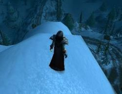
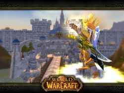
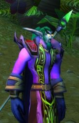
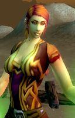
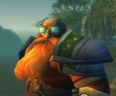

Guildes
Alfirins (les)
Alyssa
Age : Approximativement 25 ansSexe : Femme
Race : Humain
Faction : Alliance
Formation : Paladin
Description : Alyssa était mon personnage principal sur World of Warcraft.
Son histoire tragique est celle d'une jeune femme tiraillée entre le désir de prendre soin de sa soeur et de combattre le fléau dans les terres du nord de manière active, contenant celui-ci du mieux qu'on puisse le faire.
Submergée et dépassée par les problèmes de sa soeur, le Nord est devenu sa demeure, le lieu où elle pourrait...oublier. Pendant des mois elle a combattu sans relâche, accumulant les maladies et cicatrices, autant physiques que mentales.
Suite à un accident "inconnu", elle fut classée inapte au combat, et fut remerciée par le Commandant Ashlam Valorfist.
Elle passa les deux semaines qui suivirent à Ironforge, dans l'espoir de revoir les visages du passé qui lui avaient été enlevés par le temps...
Finalement, après avoir refusé le mode de vie que lui proposait son amie Shaina, Alyssa repartit pour son nord natal...pour ne jamais revenir.
Plus d'infos sur Alyssa >>>
Lire le récit de Alyssa >>>
bosbi
Age : 59Sexe : Homme
Race : Elfe
Faction : Alliance
Formation : Druide
Plus d'infos sur bosbi >>>
Lire le récit de bosbi >>>
Farrenard
Age : 3500Sexe : Homme
Race : Elfe
Faction : Alliance
Formation : Chasseur
Plus d'infos sur Farrenard >>>
Itaelynn
Age : 132Sexe : Homme
Race : Elfe
Faction : Alliance
Formation : Druide
Description : " Sert la nature, car la compréhension se situe au delà des idéaux et la nature est vie. Sert la nature, car nulle force n’est aussi immuable que la sienne. "
Le suivant de Cenarius se ressourçait dans les vastes forêts de Teldrassil. Les yeux ouverts, juché sur une large branche, il ne réfléchissait pas. Sa pupille, immobile, ne suivait jamais le mouvement des quelques elfes qui passaient non loin, cherchant encore à affronter la corruption omniprésente en ces lieux de paix, loin de tous conflits.
Il avait depuis longtemps compris qu’affronter le mal à un autre endroit qu’à sa source était une pure perte de temps. Alors même que ces pensées lui effleuraient l’esprit, il se souvint des enseignements de son père : « Inutile d’arracher la patte d’une araignée, ça ne l’empêchera pas de marcher. Si tu veux être efficace, tranche directement la tête ».
La leçon avait fini par porter ses fruits.
Itaelynn redressa la tête, nonchalamment posée au creux de son bras, et bailla longuement. Puis, les griffes du druide jaillirent de leurs fourreaux et s’enfoncèrent dans la tendre écorce de l’arbre. En deux bonds, la panthère se retrouva au sol, le saut amorti par les mousses au pied de l’arbre. Itaelynn se lécha la patte de sa langue râpeuse et se la passa deux fois derrière l’oreille, de manière à lisser sa fourrure d’ébène. Et, d’une démarche féline, il se mit en route vers Darnassus.
Plus d'infos sur Itaelynn >>>
Lire les 5 récits de Itaelynn >>>
Kalder
Age : 32Sexe : Homme
Race : Humain
Faction : Alliance
Formation : Guerrier
Description :
 Kalder est un des survivants d'une étrange brisure de l'espace-temps qui massacra toute vies (sans disctinction) d'un monde parallèle, autrefois appelé "beta"...
Kalder est un des survivants d'une étrange brisure de l'espace-temps qui massacra toute vies (sans disctinction) d'un monde parallèle, autrefois appelé "beta"...
Dans sa chute de ce monde à celui-ci, il perdit tout: talents, force, agilité, son cheval, etc... sauf son honneur et son sens de l'humour! Des qualités innées!
Le choc le laissa presque mort, échoué et désorienté, ne reconnaissant plus personne... Des paysans (un peu Beta... héhé) le receuillir et le soignèrent. Amnésique, il recommenca sa vie à zéro, dans le Nortshire, reprenant du poil en tuant quelques loups et kobolds. De fil en aiguille, ses sens lui revinrent et le goût de reprendre du service en tant que guerrier le repris subitement. Le passé étant oublié, il se concentre maintenant sur le moment présent.
 Kalder s'est refait une vie, de nouveaux ami(e)s et continue à parcourir le monde sans ce soucier de demain. La seul différence avec sa vie passé, c'est son visage: il a vieillit terriblement! Plus personne de sa vie passée ne le reconnaitrait.
Kalder s'est refait une vie, de nouveaux ami(e)s et continue à parcourir le monde sans ce soucier de demain. La seul différence avec sa vie passé, c'est son visage: il a vieillit terriblement! Plus personne de sa vie passée ne le reconnaitrait.
Mais peu importe, la sagesse inconsciente qui l'habite lui donne une longueur d'avance sur ce qui lui arrive au présent,... des souvenirs lui reviennent et l'aide à le diriger dans ses nouvelles quêtes... mémoires sorties du néant. De cette sagesse, il l'a partage et aime aider son prochain, peu importe sa race ou son rang... toujours dans le rire et la bonne humeur!
...Bien d'autres aventures l'attendent encore!

Plus d'infos sur Kalder >>>
Kaldoran
 Age : demander ça à un vieillard... rhooo !
Age : demander ça à un vieillard... rhooo !
Sexe : Homme
Race : Nain
Faction : Alliance
Formation : Prêtre
Description : Un nouveau jour se lève sur les montagnes entourant la forêt d'Elwynn... oh ! Mais que voyons nous là ? Une lumière plus forte encore que le soleil lui-même nous ébloui à l'instant !
Mais d'où vient cette puissance ? D'où vient cette formidable force qui s'accumulent dans chaque parcelle de notre être ? Et quelle est cette incroyable félicité qui nous assaille soudain, faisant perler, telle la rosée du matin, une larme de satisfaction légèrement recourbée sous notre oeil rieur ?
Mais... oui... c'est bien lui... haaaaaa mes amis quel chance avons nous là !! Oui vous l'avez reconnu vous aussi !! C'est le formidable, l'incroyable, le magnifique, le flamboyant, et doté d'une modestie outrancière, .... Le Bon Père Kaldoran !!!!!
Vous le décrire ? mais voyons... peut-on décrire un coucher de soleil ? Peut on décrire l'eclosion d'une rose avide de lumière aupetit matin ? Peut on décrire le nirvana que procure une bonne Bière des Nains ?
Non... bien sûr.... ^^
Mais allez donc le voir.. parlez lui.. si si.. ne soyez pas intimidés par son divin charisme... je ne sais que dire les amis...
hoooo !! mais... mais... il va vous parler !!!... écoutons mes amis écoutons !! La parole du Bon Père Kaldoran !! ....
Excusez moi les enfants.. Y a-t-il une taverne dans l'coin ?
Plus d'infos sur Kaldoran >>>
Miridine
Age : 32Sexe : Femme
Race : Humain
Faction : Alliance
Formation : Prêtre
Plus d'infos sur Miridine >>>
Oneeyed
 Age : inconnu
Age : inconnu
Sexe : Homme
Race : Elfe
Faction : Alliance
Formation : Voleur
Description : Quand je suis rentré dans ma guilde, il y déjà un petit moment, le grand chef de l'époque Le grand nain Thoarr, me demandais de me présenter à la guilde, ce que je fesais, qui j'étais, l'histoire de ma vie. Ce n'était pas un excerci facile à l'époque pour moi car mon passé est assez tulmutieux. Mais voulant montrer à ma guilde que j'étais heureux de les rejoindre avec ma femme Nerindra, un soir j'ai pris le grimoire de la guilde est j'y est apposé mon histoire, du moins ce dont je me souvenais. Je vous transmet icic une copie de mes ecrits, peut être apprendrai vous à mieux me connaitre.
Plus d'infos sur Oneeyed >>>
Lire les 6 récits de Oneeyed >>>
Siowallinn
Age : 25Sexe : Femme
Race : Humain
Faction : Alliance
Formation : Prêtre
Description : Siowallinn, prêtresse de la Lumière.
Siowallinn est née dans la région de Stormwind, ses parents sont issues d'un milieu simple, sans histoire. Elle a passé son enfance à l'abbaye de Northshire. Une éducation stricte, une vie consacrée à la Lumière, l'austérité de la vie d'une pretresse l'attendait. Depuis toute jeune, elle s'interesse aux soins et à la connaissance des herbes et pour cela, elle est amené à sortir de l'abbaye de Northshire, à découvrir le monde d'Azeroth et à s'émanciper.
Dès le premier contact avec le monde extérieur, elle a été bouleversé, sa prude éducation vole en éclat, Siowallinn veut devenir aventurière...
Elle rencontre Thoarr qui l'introduit dans la guilde, Herlotte et Biba, avec qui elle vit ses premières grandes aventures.
Depuis, d'aventures en aventures, un doute s'installe dans l'esprit de Siowallinn, elle ressent cette présence très puissante qu'est l'Ombre.
Un combat intérieur entre l'Ombre et la Lumière va alors la tourmenter.
Plus d'infos sur Siowallinn >>>
Tymlis
Sexe : HommeRace : Nain
Faction : Alliance
Formation : Voleur
Plus d'infos sur Tymlis >>>
Lire les 12 récits de Tymlis >>>